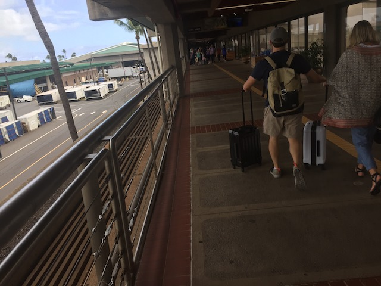
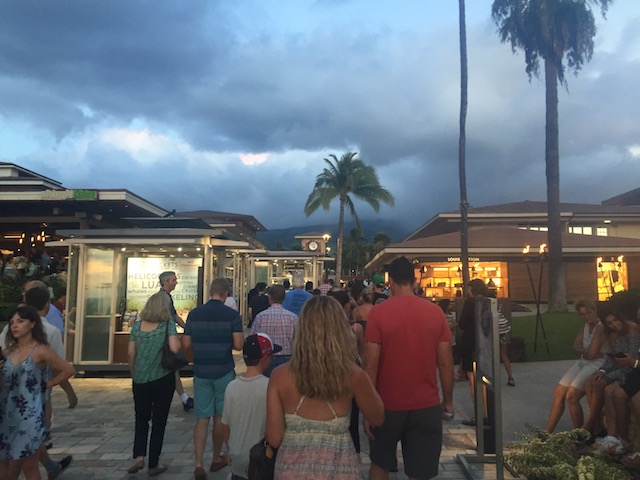
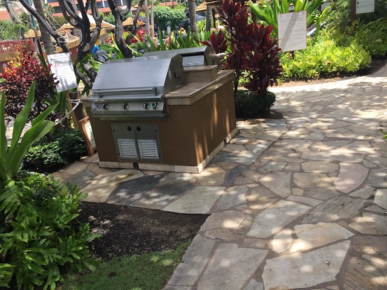

| |
Hawaii 2018
All right. It's time for another major trip. Yes, 2018 really is the year of the trip, as we did not 1, not 2, but 3!!! THREE F*CKING TRIPS!!! The first one was our Cedar Point. The second one is this trip to Hawaii, and the third one will FINALLY be Japan. I know that a trip to Hawaii isn't a roller coaster trip, and yes. It is true that we didn't ride a single roller coaster throughout this trip. However, while this is primarily a roller coaster website, we do have non-coaster updates, such as updates on cliff jumping, cruises, and even a freaking Hawaii update from our last visit (BTW, Congratulations 14 year old me on being cringy enough for me to freaking edit an update 12 years in the future for being so damn tasteless). I really enjoyed Hawaii back then, and am really looking foreward to going back.
Now, I normally don't really do airplane photography, but flying to Hawaii, there's just too many good shots.
See look. There's the entire island of Maui (One of these days, I'll have to check one of the different islands in Hawaii). =)
See these windmills? Remember them.
Somehow, I don't think that most tourists give a f*ck. =(

Hmm. The majority of the airport is outside here. It's not like this at any of the other airports I've flown into. Definetly one of my favorite airports (though to be fair, Favorite Airports is a pretty lame list idea).
We have made it to our Villas.
Just to show off where we're staying.
Ooh. This place is very nice.
We tried to warn everyone about the apocalypse on the mainland, but they just think we're doing amusing attempts to punch footballs. Hopefully, Hawaiians are much smarter than that.
Thank you! Thank you for having places to fill up your water bottles! Seriously, these things need to spread like wildfire.
Really? We just got here and you already break a glass? Well, at least now I can laugh at this.
OK. I love the view here. It's seriously a great view right here.
If you want to stay out of the ocean since the ocean is scary, they also have some really cool pools to hang out in.
CLIFF JUMP!!!!
 There's nothing special about this resteraunt, but hey. When you just fly in, it'll do. Plus, it is good.
There's nothing special about this resteraunt, but hey. When you just fly in, it'll do. Plus, it is good.
But hey. I will admit. I do like the tiki torches.
DON'T F*CKING PICK THE PINEAPPLES!!! THAT'S OUR CASH CROP RIGHT THERE!!!
All right. This place has a ton of pools. And this one is...the main one. This is the big one. Yeah. Crowds are an issue, and there's too many people to really enjoy it. But...hey! It is a nice pool.
They even have a water slide in this pool. It's mild, nothing special. But hey. It's good to have ridden a water slide on this trip.
The idiot tourists are so mezmerizing that it makes me turn into stone.

Nearby, there's an outside mall called Whaler's Village. Because that's exactly what an Island Vacation needs. A mall!
Of course. We're here to eat out. Tonight, we're at the authentic Hawaiian resteraunt Hula Grill! It too is totally authentic! It even has Hula in the name! It must be authentic!
But seriously, if in Hawaii, you have to try a Lava Flow. It's a native drink to Hawaii, and it's really good. This cocktail is awesome. =)
All right. Time for one of the big parts of the trip. =)
We had a snorkeling tour with Trilogy. Unfortunetly, a peice of my GoPro broke while on the boat. So I was unable to get any footage on the tour.
They took us to a place called Honolua Bay. It's a popular snorkeling spot thanks to the fact that there's A LOT of coral here. So you not only see a lot of fish, but sea turtles and eels as well.
Come on guys. We're gonna go find some fishies! =P
Sitting on a boat, after snorkeling in great waters, sipping an alcoholic drink. This is the stuff that most people think of when they think of a vacation. Hi co-workers! See! I do have vacations that aren't about rollercoasters. =)
Gorgeous Tropical Sunset Photo Cliche.
 All right. The journey for the Go-Pro peice begins. It's only 2.5 miles. But when you're in flip flops, it's suddenly a problem (Whaler's Village had to not have anything).
All right. The journey for the Go-Pro peice begins. It's only 2.5 miles. But when you're in flip flops, it's suddenly a problem (Whaler's Village had to not have anything).
"Hi. I'm Thomas O'Maui. I live off the scraps of resteraunt food that you tourists don't eat. Please don't clean your plate".
I found Dole Whips in Hawaii!
All right. The place I trekked out to didn't have the part I needed. So I went to a different place, and finally, this place had the part. While annoying at the time wasted on this stupid trek, I will admit that this place was far cheaper. So I will admit it was good to be saving money.
All right. Time for another resteraunt. This one was Leilanis. Hey, another really good place. I liked this place a lot.
Remember those windmills you saw from the plane? This is them. We just drove past them. Nothing of real significance aside from the fact that...windmills are awesome. Not only are they clean energy, but they look cool too.
 We got a narrow road to drive through. Seriously, this thing was damn near Tar Creek narrow.
We got a narrow road to drive through. Seriously, this thing was damn near Tar Creek narrow.
All right. So the reason for this Hawaii trip wasn't just for the sake of going to Hawaii. No, the point of this trip was a wedding. There are wedding photos, but a roller coaster website is not the place for them. Yeah, this whole trip isn't a coaster trip, but it's still fun. A wedding however...this isn't the place for that. We are IncredibleCOASTERS. Not IncredibleWEDDINGS.
Hey look! A beach in Hawaii! Take a shot everytime you see that!
Shh. Don't tell anyone. But I'm gonna sneak into this wedding.
Where am I again?
All right. What's going over here?
CLIFF JUMPING!!! After being screwed out of Tule, I'm so happy that the 2018 Cliff Jumping Season is FINALLY about to begin!
The view from jumping off Black Rock.
Now this is nothing special as far as cliff jumping goes. It's about a 20-25 ft. jump. Approximately the same size as The Rock. Small mild jump (It's hilarious seeing people freaking out over a small cliff jump. Jump the 70 ftr bitches!), but still really fun (Oh, another random fun fact. This was my first ocean jump).
I know I jokingly mentioned that the ocean is scary earlier, but that doesn't stop me from going in. What normally stops me from going in the ocean back home (aside from not having time) is that the water in California is cold and uncomfortable.
All right. That's enough fun. Time to go back to the mall.
Ah. It's just another resteraunt. That's all.
Tonight's....actually, scrap that. Saying tonight implies that I only had 1 drink. I had multiple drinks. Anyways, this hour...this half-hour's drink is a White Walker. Again, this was a really good drink. And now, I'm shocked that I didn't turn into an alcoholic during this trip. =)
I know there's nothing particaurly special about this resteraunt, but for some reason, I really liked the food here.
Psst. Better secure your tiki torches. A Nazi might swoop in and march with them. ;)
The GoPro is fixed now, and now it's time to do some local snorkeling. Yeah, it's a bummer that the camera didn't work for the snorkel excursion. But there's still some great snorkeling over at Black Rock.
Ooh! A wall of fish. Yeah, they're really called a school of fish, but come on. That's a f*cking wall.
 "*Ugh* Even at the seafloor, I can't avoid assholes like you."
"*Ugh* Even at the seafloor, I can't avoid assholes like you."
If you know me, you know that I'm not exactly an ocean-person. But hey. I am enjoying this, and this is really cool.
"Psst. If we swim down there, we'll be safe from him. Pathetic humans can't swim down to those depths without Scuba gear, which this particular person lacks."
So long, and thanks for all the fish.
What's that!? Yep! I found a couple sea turtles over here! So yeah. The only thing I didn't see here that was on the tour were eels. But hey. That's still really cool.
"HA! You can't stay down there forever! Soon enough, you have to come up to the surface to breathe!"
Yo Sea Turtle! What's up!? =)
This is basically the polite way of saying "Please don't pee here".
All right. We ventured out to check out a place called Coconuts, since it's popular with the people we're with.
 Now it's primarily a seafood place and I'm really not big on seafood (You're welcome fish I just saw in the ocean). But they did have steak tacos that were good.
Now it's primarily a seafood place and I'm really not big on seafood (You're welcome fish I just saw in the ocean). But they did have steak tacos that were good.
Did I see you on a snorkeling expedition? No? Then you're dinner to me. >=)

Might as well spend a night out BBQ. We have good meats to choose from, beers, and it's a nice night. =)
All right. So that's our Hawaii Trip. I'm super glad that I got to go back here. Finally checking out the beach, seeing some cool sea creatures, getting in some cliff jumping, drinking a lot of alcohol, and just hanging out in a tropical atmosphere is just a ton of fun. I really liked Hawaii, and would like to go back again sometime.
Home
|